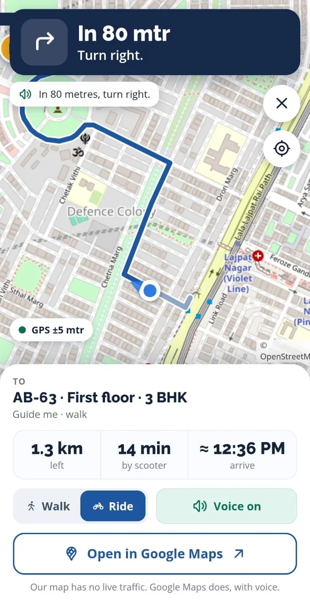
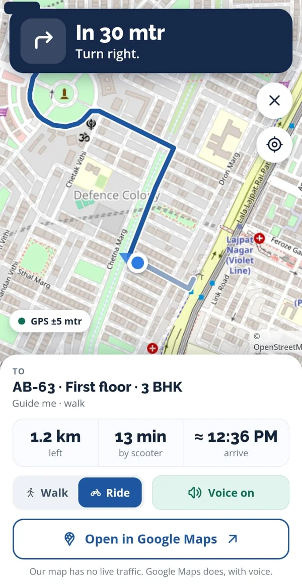
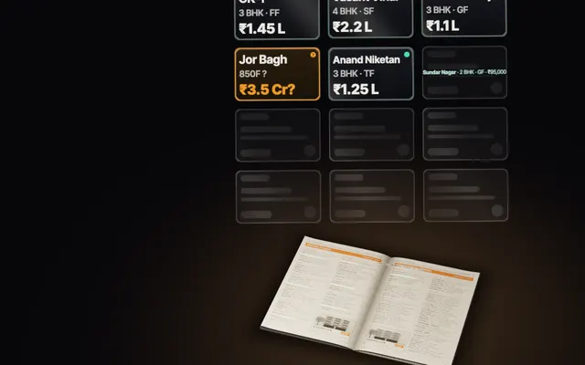

WorkCase study 01CRM and operations
A brokerage’s own CRM, in daily use since 9 September
A Delhi brokerage left spreadsheets and a rented 12-seat CRM for a system it owns. Built in three months.
- Status
- Live since the 9 Sep 2026 cutover, behind a staff login
- Timeline
- Requirements to go-live in 3 months, Jun–Sep 2026
- My part
- Embedded with the brokerage’s team for the build, from requirements to go-live and training.
Names and figures on screen are changed.
The week the team moved in
Client-work tasks completed per week · read from the production database, 22 Oct 2026
W40 · 28 Sep: 505 tasks, three weeks after go-live: the busiest week so far.
One enquiry, from a chat to a site visit
Before: leads in a rented CRM, listings in spreadsheets, two print magazines typed up by hand. Now one system holds it all. A typical path, over the real screens:
-
Website
A visitor asks in plain words
“A 3 BHK to rent in Vasant Vihar under 1.5 lakh, moving in December.” Mitra, the site’s scripted assistant, reads it the way a broker would.
-
Website
Answers come from live, checked stock
It answers from the CRM’s own inventory. The Verified badge means the listing was checked in the last 30 days (45 for sale).
-
CRM inbox
The enquiry is already in the CRM
One tap on Enquire opens a lead with the brief and the pages the visitor read. Staff watch the chat live.
-
CRM inbox
Asked for a person, after hours
After hours, Mitra books a callback for the morning. Anyone can take over the chat with one tap.
-
Calling queues
The callback joins a queue
Queues are rebuilt each time: callbacks due, no-connects, campaign lists. A caller presses Play.
-
Calling session
Call 1 of 6, on one screen
History beside the dial pad; log the outcome, book the follow-up, Save & next call.
-
Enquiry workspace
The note the next person needs
The call’s remark is pinned on top: family of four, moving by 15 December, two car parks, up to ₹1.5 L.
-
Enquiry workspace
Where it came from, kept apart from how
Found on Google, written through Mitra. Channel and capture are stored apart, so Google keeps the credit. ChatGPT is a channel too.
-
Matching
Homes ranked by fit to the brief
Search opens filtered from the brief. Each home shows its fit and how fresh its last check is.
-
Team remarks
Shared, and a visit booked
The shortlist goes to the client from the record; team remarks keep the plan in one place.
-
On a phone
The visit, closed from the street
Visited or Not visited for each home, and a note for the next person. The system writes 70% of the timeline.
121 tasks in go‑live week. 505 three weeks later.
Every figure is dated, read from production. The full list and its caveats are in the drawer.
All the numbers (21)
- 9 Sepproduction cutover, three months after work began (Jun–Sep 2026)2026
- 12,152live listings, 98% loaded by import and kept current by importers22 Oct 2026
- 6,564listings published straight from the CRM to the website; 7,474 URLs in the sitemap, which refreshes daily6 Nov 2026
- 8,541listings and 3,237 photos in the first load from the spreadsheets2026
- 157screens in the CRM (distinct pages a person can open; modals and panels not counted)counted from the code · 6 Nov 2026
- 16,441listings refreshed, 3,101 added and 4,128 retired from 2 magazine issues; 7,844 live from magazinesdashboard · 23 Oct 2026
- 274human decisions covered 21,182 printed lines across two issues (the Sept 2026 issues alone ran to 10,639 lines)23 Oct 2026
- 4,574of 4,575 listing lines in one printed issue were rebuilt exactly as a second, independent reading had themSept 2026 issue · noted in the code
- 2,248property↔lead matches (141 requirements × 827 listings); 1,887 on 5 Oct30 days to 22 Oct 2026
- 1,644listings verified (1,099 on 5 Oct); 789 of 815 listing checks done since the desk opened on 9–11 Octto 22 Oct 2026
- 1,448owner calls in the calling screen’s first 16 days: 6 callers, 765 owner numbers, 490 calls connected21 Oct – 5 Nov 2026
- 1,362follow-up call tasks completed (not all from queues)30 days to 6 Nov 2026
- 2,397tasks completed (1,608 client work + 789 listing checks); 1,014 in the 30 days to 5 Oct30 days to 22 Oct 2026
- 70%of the 14,297 timeline entries were written by the system, not typed (64% on 5 Oct)30 days to 22 Oct 2026
- 6,089legacy lead records and 27,516 history events in one import, 0 rejected30 Jul 2026
- 147of 496 new leads came organically, not from paid ads9 Sep – 6 Nov 2026
- 58%of organic leads have a qualified requirement (85 of 147), against 23% of Meta-ad leads (78 of 334)read 6 Nov 2026
- 261enquiries carry an ad-campaign (UTM) tag, near zero before Octoberto 22 Oct 2026
- 85%of 119 Mitra chats never needed an agent (101); 35 became or joined an enquiry7 Sep – 6 Nov 2026
- 10,000+addresses on the CRM’s own mapreported 28 Nov 2026
- 0map keys, paid map services or per-request fees in the coderead from the code · 28 Nov 2026
Read-only production queries, 5, 22 and 23 Oct and 6 Nov 2026. The address count was reported on 28 Nov 2026 and is not one of those queries. “Organic” is the CRM’s own source category: everything except paid ads, portals, walk-ins and manual entries. By its channel logic 2 website leads had clicked a Meta ad, so 145 are not linked to any ad. Only the 30 organic website and Mitra leads (12 from Google search) can be credited to the website or search; Instagram and WhatsApp leads are messages logged by staff, and the 33 inbound-call leads in the same window were logged by staff, not captured by the IVR. Before the build the brokerage paid about ₹1.44 L a year in seat fees (12 seats × ₹1,000 a month), with its lead history held in the vendor’s system.
10,000+ addresses on its own map, and a route to each door
Site visits and verification trips need a map, an order of stops and directions to the door. Instead of a paid maps platform, the CRM got its own, on open map data. Built in ten days, 18 to 28 Nov 2026.
- 10,000+addresses on the map, each one a pin a person can openreported 28 Nov 2026
- 0map keys, paid services or per-request fees in the codeNov 2026
- 40houses the planner will put in the best order for one daybuilt-in limit
- 25 mfrom the door before “I’m here” lights up on the phonebuilt-in rule
The map: every address placed, then checked
- Physically verified
- Location added
- Inactive listing
- Collectcolony and house number, from every listing
- Cleanone spelling for each house
- Geocodea map point, kept within 3 km of its colony
- Confirmby the team, then at the door
- Placed by a pipeline, not by hand. Each listing’s colony and house number is collected, cleaned to one spelling (“B 27” and “B-27” are one house) and geocoded: looked up and given a point on the map.
- Checked by people, confirmed at the door. A doubtful match joins a check list the team answers Right or Wrong. A phone reading taken within 50 m of the door marks the pin “Physically verified”: someone stood there.
- Three ways to read it. Listings, demand by colony, and listings that still need a location. Draw a box round an area to select every home in it.
The routes: a client’s visits and an agent’s verification trips
- Open mapOpenStreetMap tiles, drawn with Leaflet
- Stop orderthe CRM’s own code, day by day
- Road pathan open-source Valhalla router
- Phone guideturn by turn, to the lane
- Two kinds of trip, one planner. A client’s visit day shows where to meet and allows 15 minutes a house. An agent’s verification trip leaves from the office, allows 10 and stops for lunch at 2.
- The day in the best order. The nearest stop first, then the planner keeps improving the order until no change makes the trip shorter. A new order is offered only when it saves 5 minutes or 500 m.
- Minutes an agent can plan on. Under 250 m is a walk; longer is a ride at city speed, with three minutes to start and park. The estimates were tuned against about 4,000 real road distances.
On the road: its own turn-by-turn, with voice


Real navigation on free, open maps. No map key and no Google Maps bill.
- Turn by turn, spoken. On foot or on a scooter, with the distance left, the minutes and the arrival time. The screen shows how sure the GPS is: here, within 5 m.
- To the right gate. A route ends on the road the house is entered from, then “I’m here” within 25 m. The guide never stores where the phone is.
- Google Maps only when it is needed. The CRM’s map has no live traffic and says so on the screen. One tap opens the same trip in Google Maps.
- Why it costs nothing. The map and the router are free public services, asked sparingly, and every route is kept. They see map points only: never a client, an owner or an address.
The links: one for the client, one for the team
Your visit planSat 5 Dec · 11:00 AM
Meet at the colony gateDirections
Your agentCallWhatsApp
3 BHK, second floor₹1.45 L a month
3 BHK, first floor₹1.3 L a month
Add to calendar
Verification trip6 stops · ≈ 7 km · from the office
1M blockAB-72 · verified 12 days ago
≈ 4 min ride
2C blockAB-102 · due this week
DirectionsRe-route from here
- The client’s visit plan. The date, where to meet, the agent with Call and WhatsApp, and each home as the public website shows it. No house numbers, no owners, no codes. It ends the day after the visit.
- The client’s shortlist. A “Handpicked for you” page of homes for one enquiry. The enquiry shows when the client opened it, and a home they turn down lands there too.
- The team’s trip. Behind the CRM sign-in: the stops as a timeline, Directions for each, and “Re-route from here” when the day changes. House numbers show only to people with that permission.
The Survey Master: what to check next, and who checks it
A listing counts as fresh for 30 days to rent and 45 for sale. The Survey Master is the desk that keeps it that way, by phone and at the door, and shows whether the stock is getting fresher. Opened 9–11 Oct 2026; analytics added 17 Nov.
- 1,644listings verified, up from 1,099 seventeen days earlier5 Oct – 22 Oct 2026
- 789of 815 listing checks done since the desk opened9 Oct – 22 Oct 2026
- 1,448owner calls in the calling screen’s first 16 days, 490 of them connected21 Oct – 5 Nov 2026
- Stock healthThe share fresh, with photos and priced, for four kinds of stock.
- Work done, per personChecks, calls, trips and shoots.
- CallersPick-up rate, talk time and the best hour to call.
- When owners pick upBy hour and by weekday.
- ColoniesFresh share against last month, and what falls due next.
- Call checksBursts, repeats and odd hours: signals to look at, not proof.
- It knows what is due, and why. Nine reasons, in the order the work should be done. Among them: a client is waiting, the check lapses this week, three calls went unanswered, the listing is new from the magazine.
- It hands out the work. By colony, working hours and free time, and it says why it chose that person. On a shared call list a caller sees who is already on an owner.
- Phone first, then the door. Three unanswered calls mark a listing unreachable, and the desk can send it on a verification trip. At the house: one tap for Got in, Locked or Owner not there, and a photo.
- It keeps time. A morning summary at 9:30, a nudge an hour after a check falls due, tomorrow’s trips at 6 PM and a freshness reading every night.
The Magazine reader: a printed issue in, searchable listings out
Two printed property magazines list homes every month, in shorthand. Each issue used to be retyped by hand. Now the PDFs are read and matched to the listings, and a person decides only the doubtful lines. In use since Sept 2026.
From two printed magazines to the listings
Two issues, Sept 2026 · counted 23 Oct 2026
- 16,441 listings refreshed
- 3,101 added
- 4,128 retired
Before, every issue was retyped by hand. Now 7,844 live listings come from the magazines.

A 3D Lab chapter: a printed page turning into searchable listings. Loads only if you start it.
GK-1SF3BR2100 SFT1.85L +M98•• ••• •••
- Locality
- Greater Kailash 1
- Floor
- Second
- Bedrooms
- 3
- Size
- 2,100 sq ft
- Rent
- ₹1.85 L + maintenance
- Phone
- on a listing already
AB-72 Found by phone, address and floor: refreshed, not added twice.
- Drop the PDFs inOne for each section. The printed lines are rebuilt from their place on the page: 4,574 of 4,575 matched a second, independent reading of one Sept 2026 issue.
- It reads the shorthandLocality, size, floor, price and phone numbers, in each magazine’s own style.
- It matches without codesPrint carries no listing codes, so a line is matched on phone, address and floor.
- A person decides the doubtful linesTwo matches, no floor printed, a rent that looks like a dropped decimal. The printed line sits beside what was read.
- Apply, then retire, once a monthListings are refreshed, added or merged. One missing from every magazine that month is retired, unless it was verified in the last 10 days.
- Then it is ordinary stockSearchable, filtered by source, queued in the Survey Master as “new from the magazine” and published to the website.
Try its public cousin
This CRM sits behind a staff login. Fieldwise, built in the open, shares its ideas.
Fieldwise: a brokerage CRM built for the field
The same ideas in a version you can open now.
- Matching
- Calling queues
- Trips
- A verification desk
How it was built
I made the product calls and directed AI coding tools, embedded with the brokerage’s team for the build.
- Laravel
- Filament
- Livewire
- MySQL
- Self-hosted
- Leaflet + OpenStreetMap
- Valhalla routing
- Knowlarity IVR
- DLT SMS (Airtel IQ)
- Meta Pixel + Conversions API
- Search Console API
- Requirements and product decisionsIn the words the team uses.
- An AI-assisted buildAI coding tools under my direction.
- Every change tested before it shippedOn desktop and on phones.
- Migration, then go-liveRecords moved on 30 Jul 2026, cutover on 9 Sep 2026.
- Training, then more shippingThe verification desk opened on 9–11 Oct, its analytics on 17 Nov, the map and routes on 18–28 Nov.